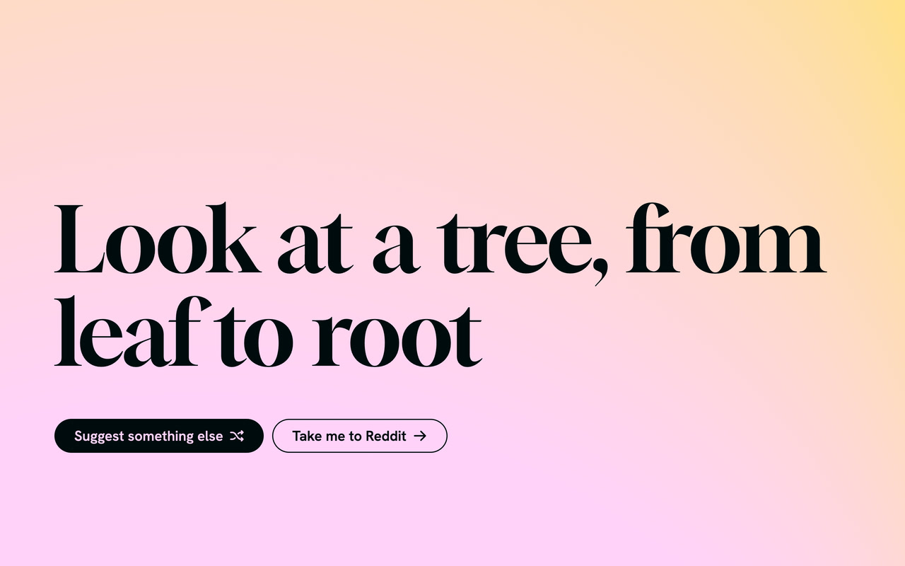
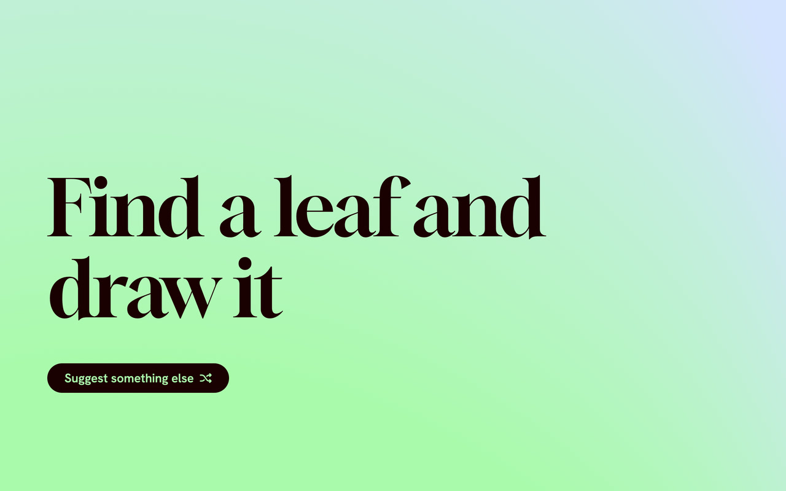
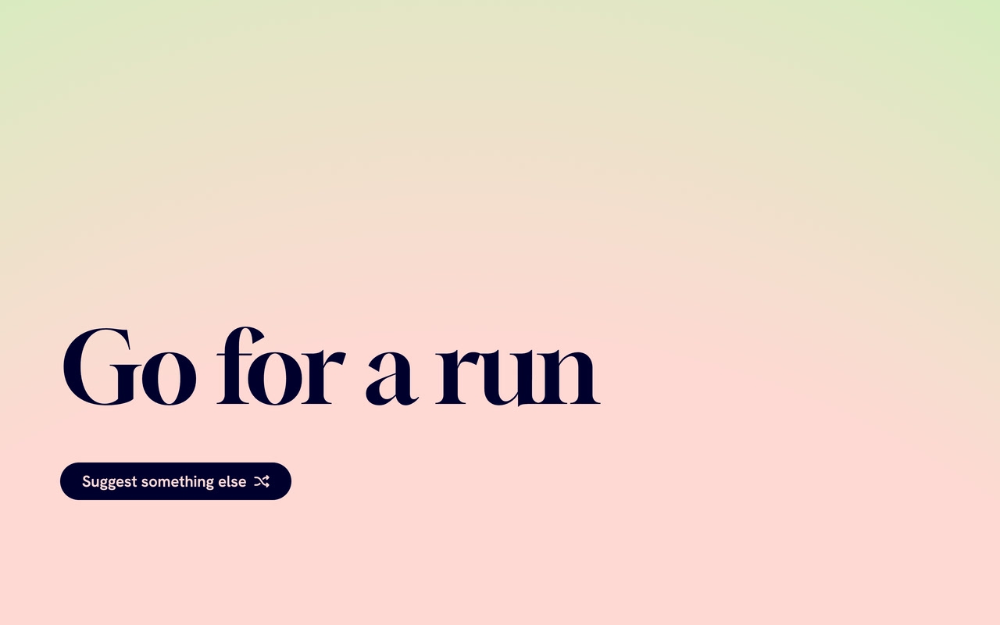
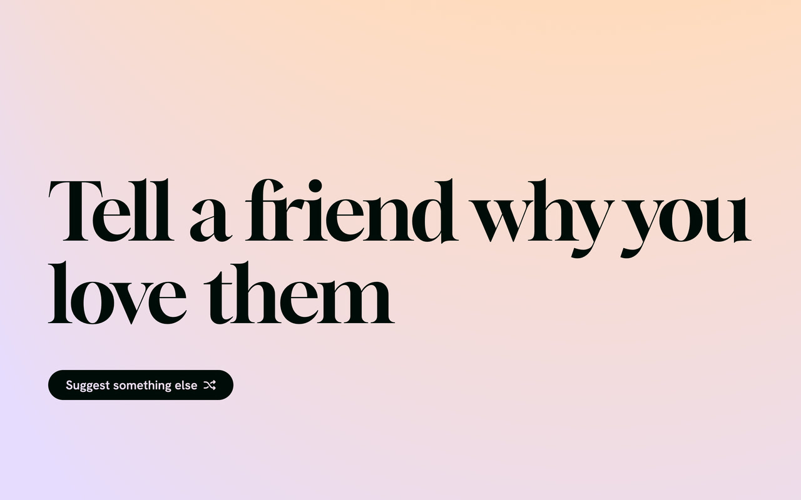
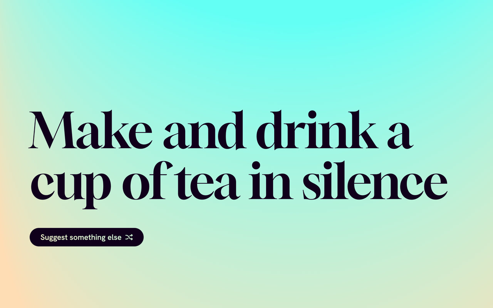
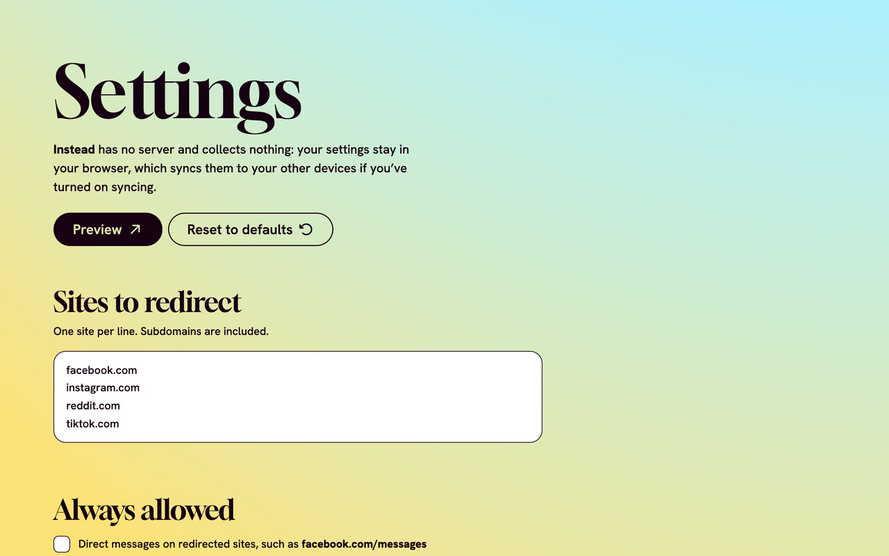

You were about to open reddit.com.
Instead, find a leaf and draw it.
Free and open source. The store listings are in review and go live soon. Until then, try it here.
How it works
Open a site on your list.
Facebook, Instagram, Reddit and TikTok to begin with, or any site you add. Your browser sends you to Instead before the site even loads.
Get one suggestion instead.
Something fun, free and fulfilling, big enough to read from across the room. Not feeling it? Ask for something else.
Or go anyway.
After five seconds, “Take me to …” lets that tab through for 15 minutes. Blockers say no. Instead says what else you could do, and leaves the choice with you.

A new colour every time
Every visit, and every new suggestion, brings a new hue. Here are a few.







Make it yours
- Choose which sites to redirect. Subdomains are included.
- Keep the useful parts: let direct messages through, or allow a single subreddit.
- Write your own suggestions, with links if you like.
- Settings open from the toolbar and save as you go.
No server. Nothing collected.
Instead runs entirely in your browser. Your settings stay there too, synced between your devices only if you’ve turned on your browser’s own syncing. It only asks for access to the sites on your list.